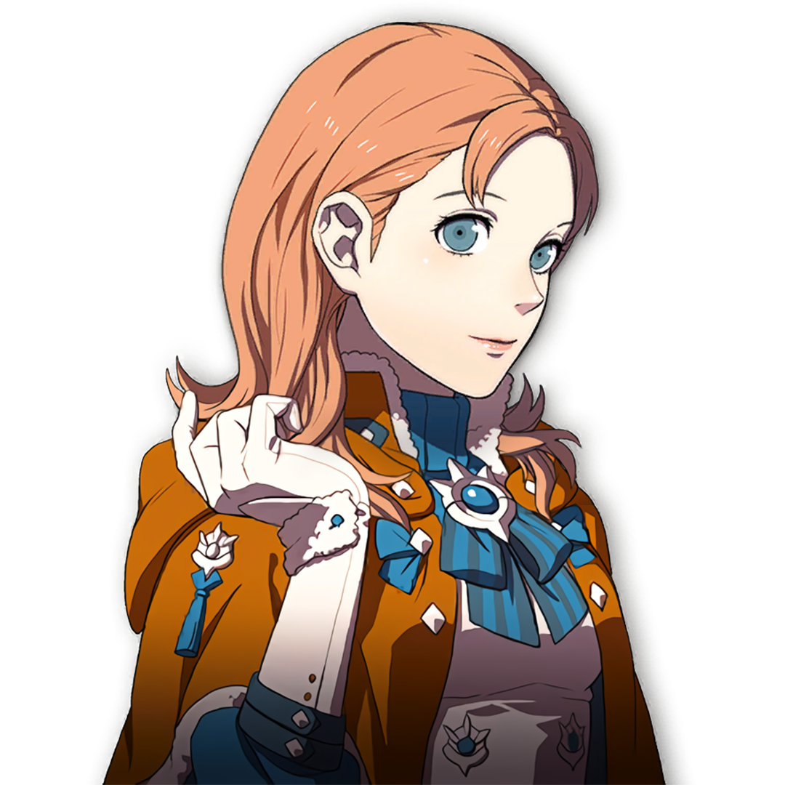

Annette


Gender: F
Age: 16
Crest: Minor Crest of Crest of Dominic
Height (cm): 151
Nationality: Holy Kingdom of Faerghus
Birthday: 5/9 - Harpstring Moon
Interests: Studying, Singing and dancing,
Likes: Cleaning, doing laundry, morning walks, getting dressed up
Dislikes: Indolence, dark places, hard-to-reach places that need a good dusting, coffee
Status: Daughter of a Kingdom knight, niece of Baron Dominic